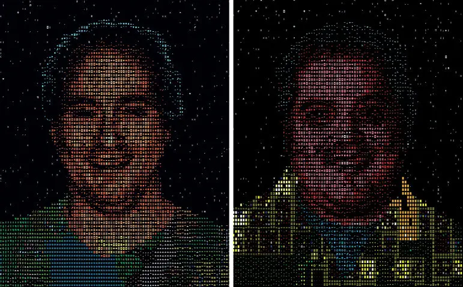

Главная | Страница 1 | Страница 2 | Страница 3 | Страница 4
Dwarf Fortress является наследницей нескольких проектов, которыми братья Тарн и Зак Адамсы занимались в прошлом. По воспоминаниям Тарна Адамса, в пятом классе школы он написал на бейсике игру под названием dragslay, которая представляла собой просто набор из нескольких сражений в духе Dungeons & Dragons. В старших классах Тарн переписал dragslay на языке C и постоянно дорабатывал, добавляя новые возможности, в том числе исследование карты мира. В 1998 году братья забросили проект, ставший слишком громоздким для компилятора Borland — Тарн Адамс не считал, что сможет извлечь из этого хобби какую-либо прибыль. Тем не менее, в 2000 году братья вернулись к старому проекту снова, перезапустив его под названием Slaves to Armok: God of Blood и рассчитывая сделать из него компьютерную ролевую игру больших масштабов — сначала двухмерную изометрическую, позже трёхмерную. Шуточное имя бога Армока было образовано из названия переменной arm_ok в коде dragslay, проверявшей, не отрублены ли руки персонажа. Позже Тарн Адамс называл Slaves to Armok «этой ужасной трёхмерной игрой» и «самой странной игрой на свете»

Братья Адамс составили список объектов и возможностей, которые должны присутствовать в законченной версии игры (1.0); номера версий игры обозначают, какая часть этого списка уже была выполнена. Тарн Адамс отмечал, что не стремится ограничиваться заранее составленным списком — он продолжает учиться и открывать для себя новое, придумывая новые возможности для добавления в игру. Описания очередных исправлений обширны и представляют собой занимательное чтение: так, журнал PC Gamer призывал своих читателей подписываться на RSS-канал разработчиков, приводя примеры курьёзных ошибок, часто возникающих в результате непреднамеренного взаимодействия игровых механик. Тарн Адамс в качестве своих любимых историй описывал случай, в которых дварф-фермер вместо семян высадил на ферме кровать.